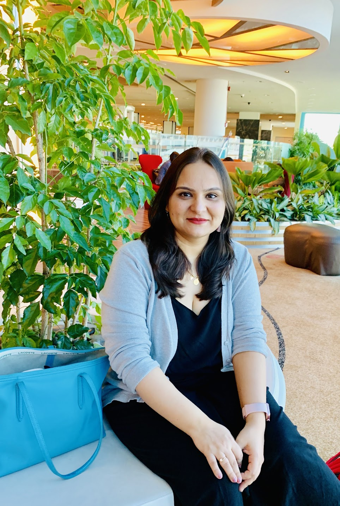
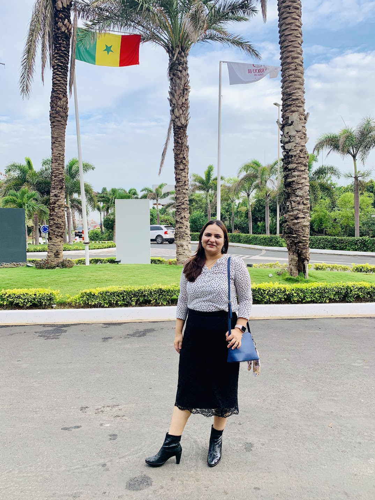
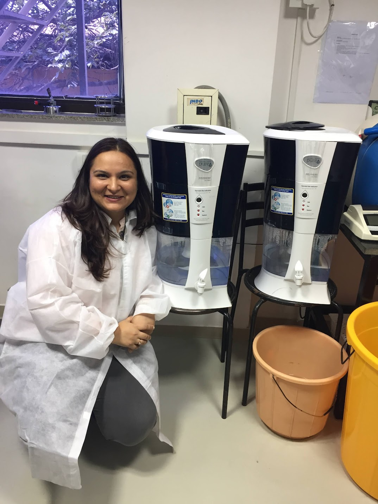
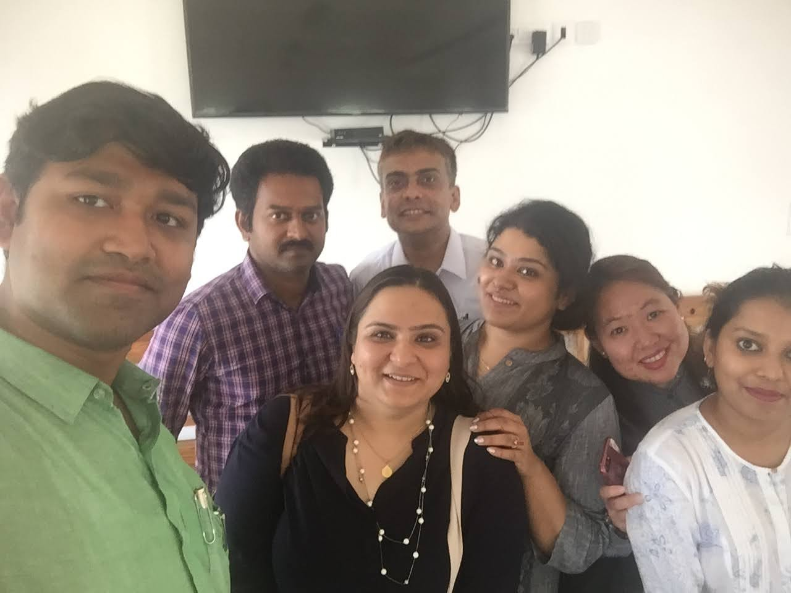
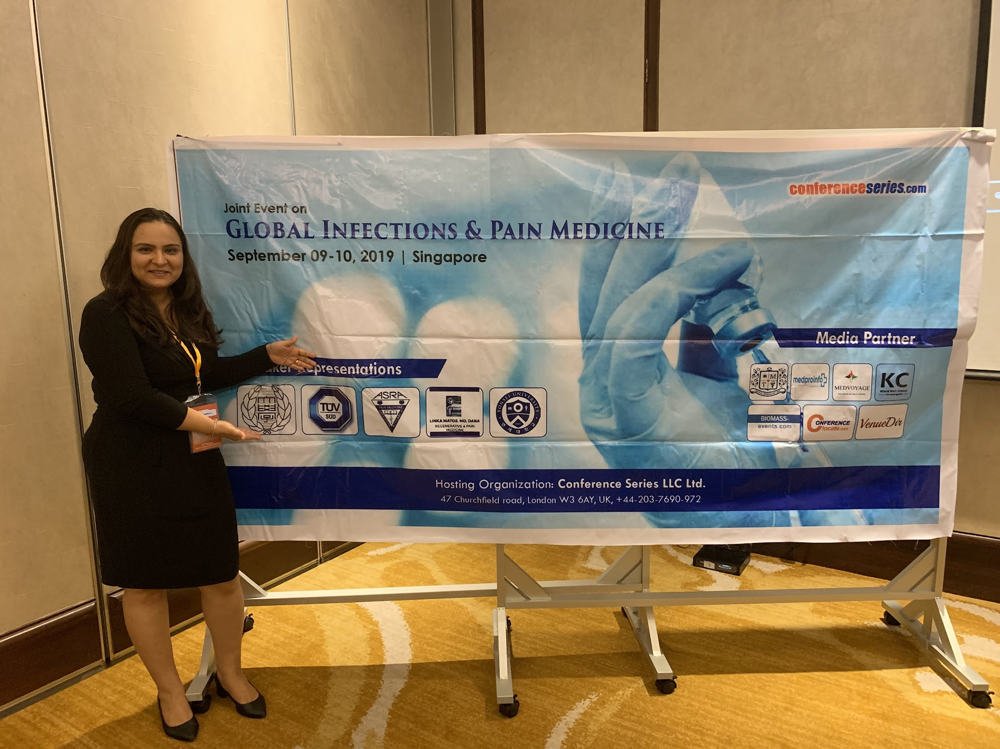
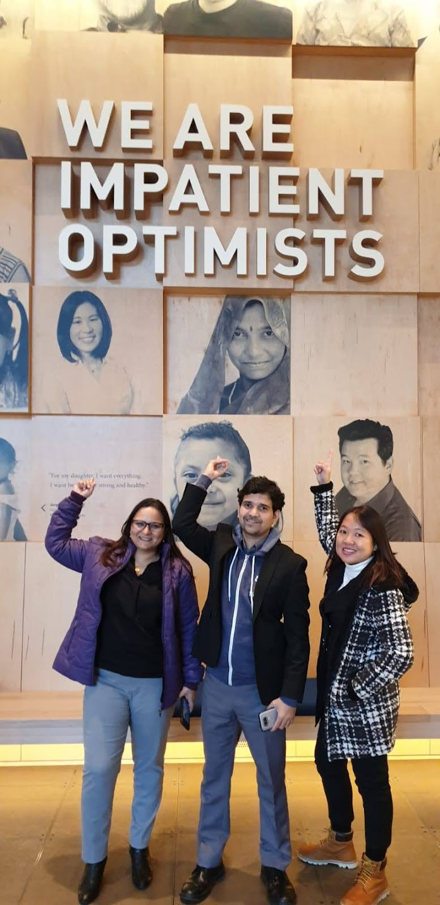
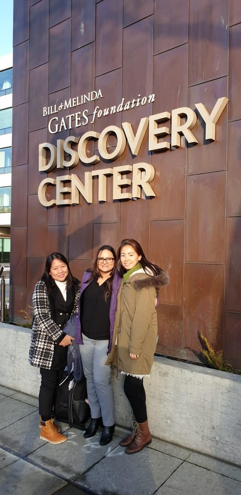
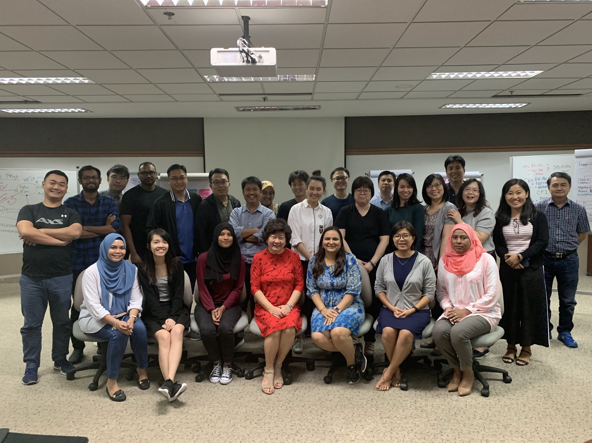

Environmental Scientist & Policy Expert
PhD environmental microbiologist with 20+ years bridging rigorous science and real-world sanitation policy — from Singapore laboratories to ISO standards used in 15+ countries.




My story
I began my journey in environmental science driven by a simple question: how do invisible microorganisms determine whether water is safe? That curiosity took me from Mumbai to a PhD at the National University of Singapore, and into two decades of work spanning continents, institutions, and disciplines.
Today, I work at the intersection of science, policy, and institutional sustainability — co-developing ISO standards adopted across Africa and Asia, leading India's first liberal arts university sustainability programme, and advising governments and foundations on water and sanitation challenges.
Career milestones
What I do
My work combines laboratory rigour, field experience, and policy engagement — offering a rare end-to-end perspective from science bench to implementation at scale.
Over 15 years of laboratory research in waterborne pathogen detection, water treatment efficacy, reservoir safety, and cyanotoxin monitoring. Pioneered qPCR methods for low-cost pathogen surveillance applicable in low-resource settings.
Core technical contributor to ISO 30500 (non-sewered sanitation systems) and ISO 31800 — standards now used in sanitation programmes across 15+ countries in Africa and Asia, supported by the Bill & Melinda Gates Foundation.
Founded and scaled India's first sustainability programme at a liberal arts university, achieving national QS rankings recognition. Expertise in biodiversity reporting, circular economy, menstrual waste recycling, and university SDG integration.
Bridging technical research and decision-making for government ministries, UN bodies, bilateral foundations, and civil society organisations. Experienced in multi-stakeholder programme design, training, and capacity building across Asia and Africa.
Available for
Advisory boards · Expert consulting · Conference speaking · Independent director roles · Research collaboration · Training & capacity building
Research
Peer-reviewed research spanning water safety, sanitation, air quality, and circular economy. Each entry includes a plain-language summary of why it matters.
Speaking & advisory


Inviting me to speak?
I speak at academic conferences, policy forums, corporate ESG events, and UN convenings. I'm available for keynotes, panel discussions, and workshop facilitation. Get in touch →
In the field


Let's connect
Whether you're looking for a scientific advisor, a conference speaker, a research collaborator, or an independent director with deep sustainability expertise — I'd love to hear from you.
Currently available for: advisory board positions, keynote speaking, research collaboration, independent director roles (IIM Ahmedabad Women Director Programme alumna), and sustainability consulting.